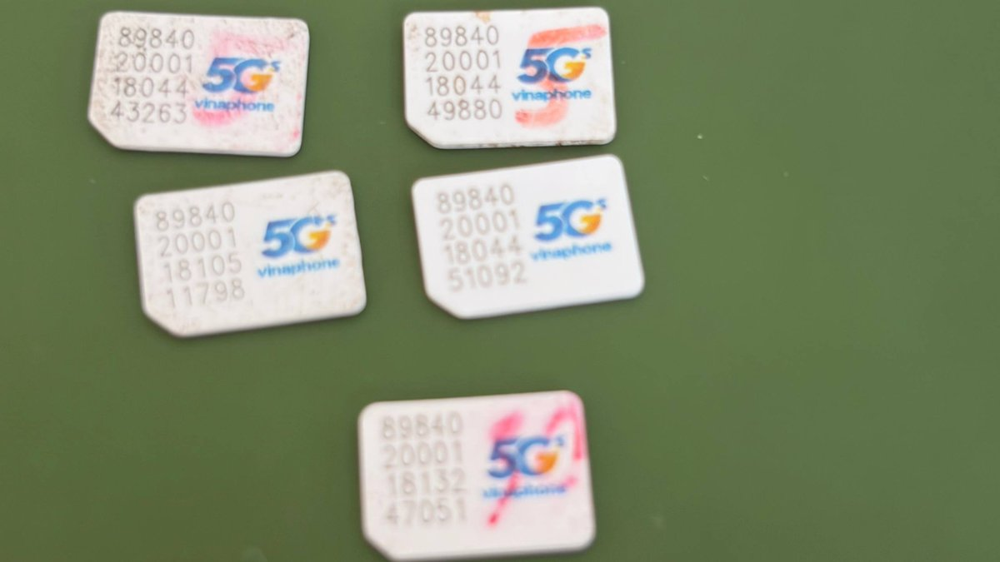
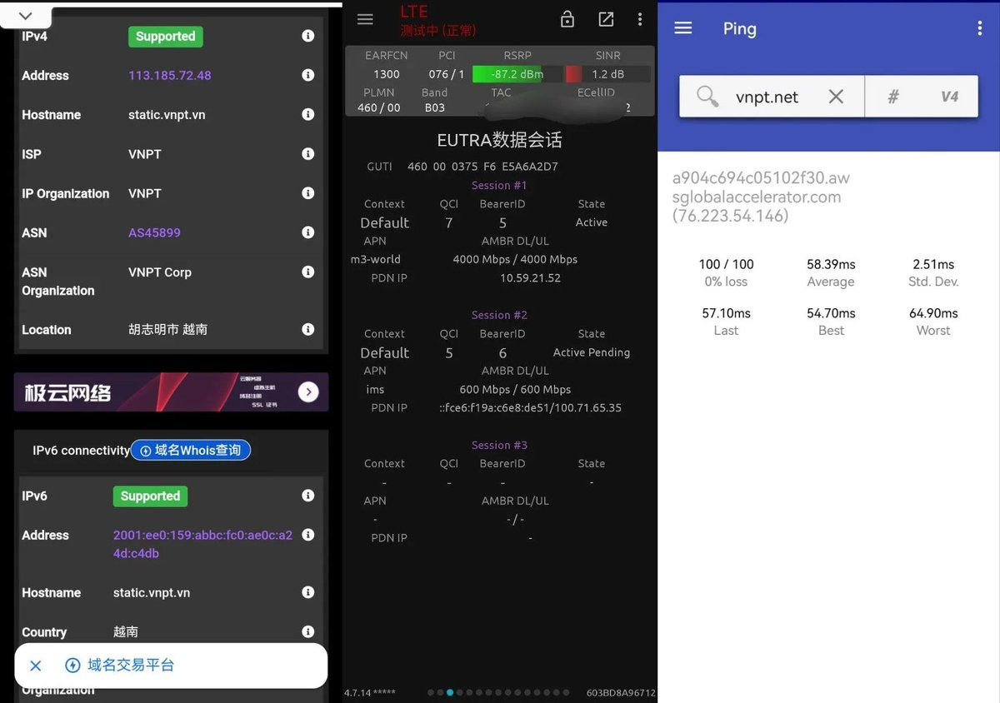
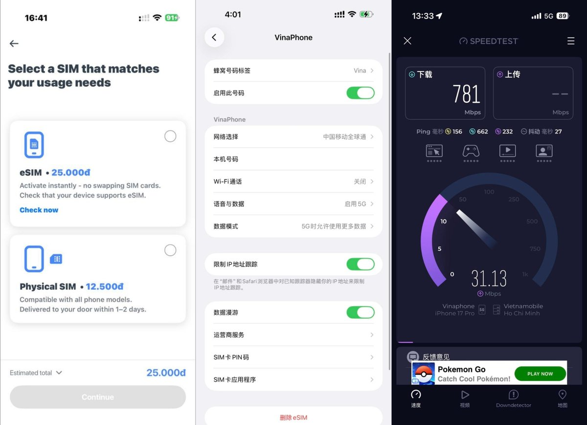

@m1ssuo 速度不赖这个 延迟也不高




Vinaphone RU10全球10日双不限漫游，每10日99.9万越南盾（约260块），相当于一个月780元
在国内漫游中国移动，QCI7，AMBR 4Gbps对等速率
从广东到越南仅55-60ms，IP属地越南胡志明
需亲自到越南办理，提供实体卡和eSIM形式，带+84号码 https://t.co/6140OAlr2P https://t.co/QUqBufx0q6
在国内漫游中国移动，QCI7，AMBR 4Gbps对等速率
从广东到越南仅55-60ms，IP属地越南胡志明
需亲自到越南办理，提供实体卡和eSIM形式，带+84号码 https://t.co/6140OAlr2P https://t.co/QUqBufx0q6